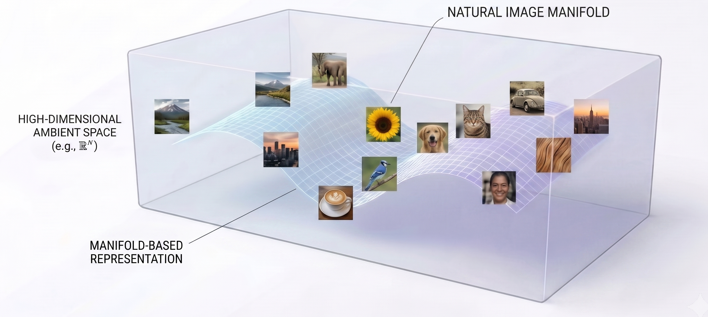
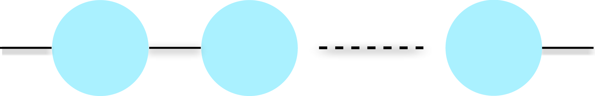
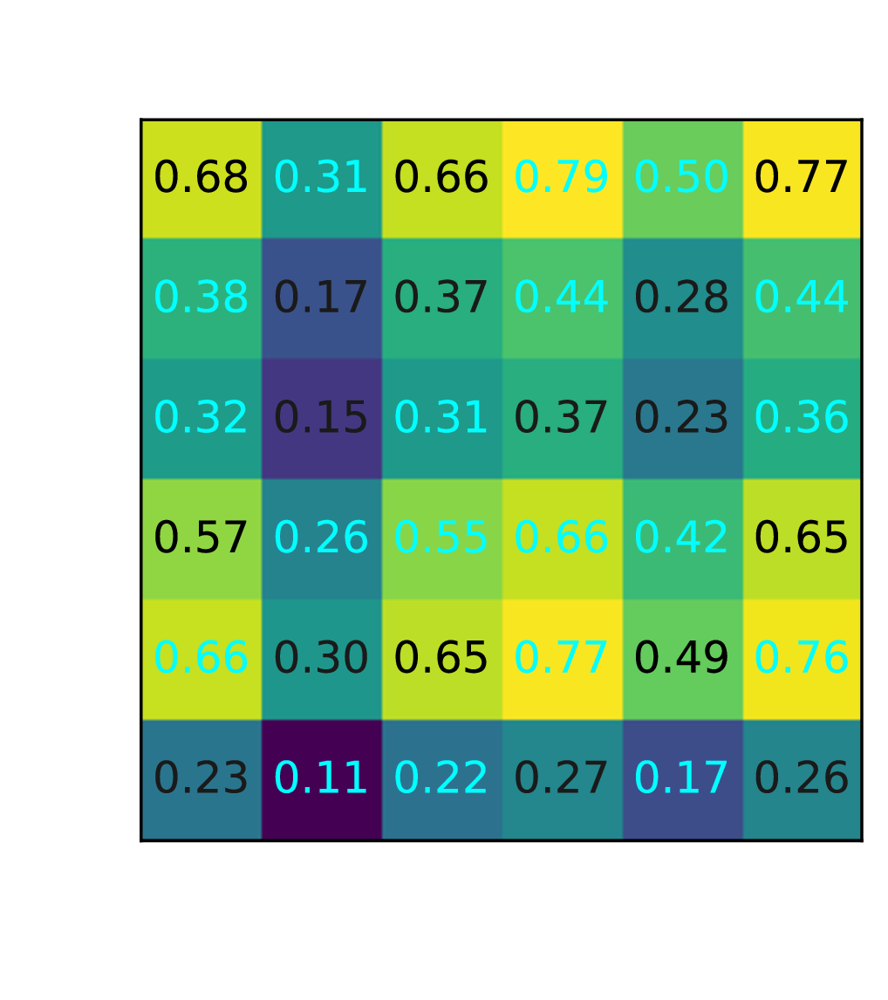
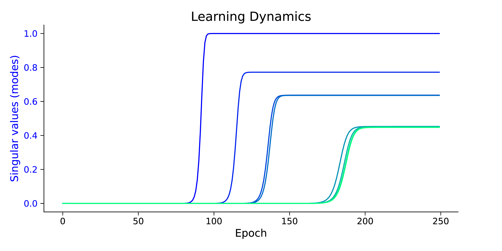
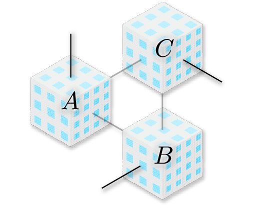
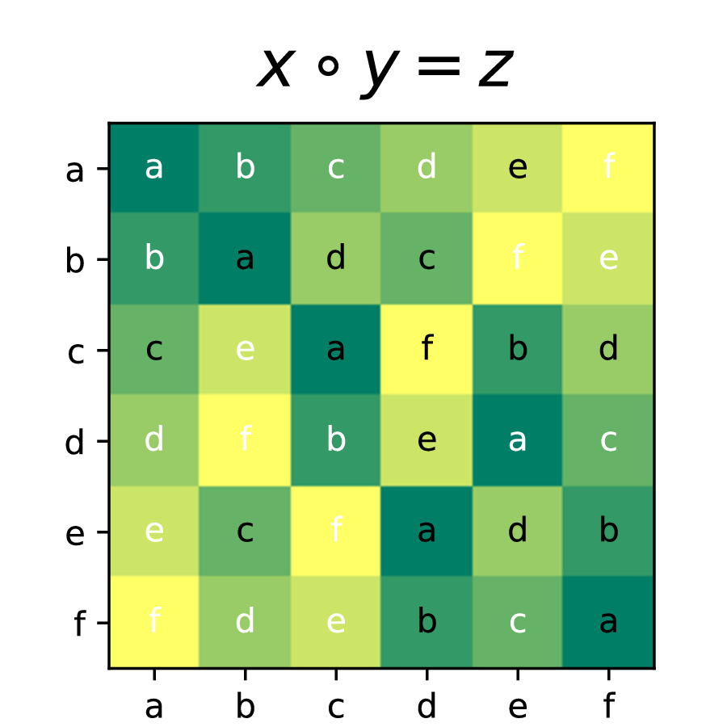

Interpolation over Low-Dimensional Manifold

Matrix Factorization → Matrix Completion



Exact Algebraic Structure Over Discrete Symbols
Tensor Factorization → Algebraic Completion


Flatness natively discovers exact group structures.
| Target | gzip | Our Method | Limit |
|---|---|---|---|
| $C_{24}$ | 77 Bytes |
76 Bytes |
~30 Bytes |
| $S_4$ | 206 Bytes | ||
| $S_4$ Isotope | 366 Bytes |
Our framework unlocks a novel generalization paradigm for deep learning beyond smooth interpolation: to natively discover exact algebraic structures.